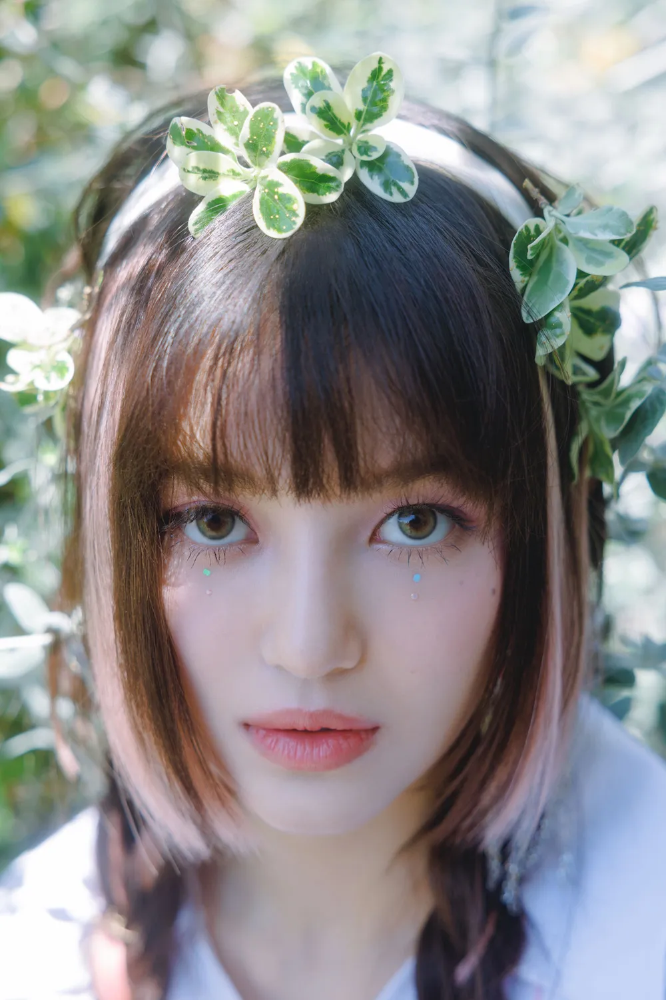
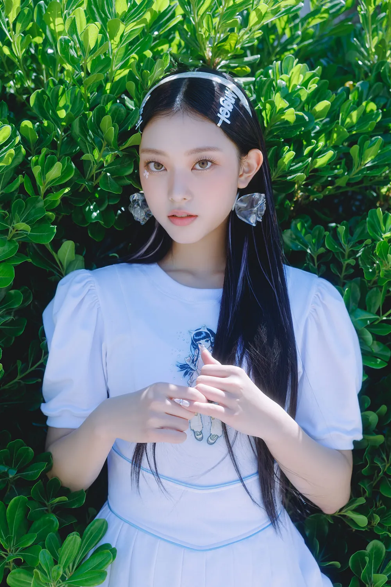

Member


#Minji
#Hani
#Daniel
#Haerin
#Hyein
클릭하면 이동합니다 !

민지
2004년 5월 7일생이며 강원도 춘천시 출생이다.
2017년 중학교 1학년 때부터 약 4년 동안 쏘스뮤직과 어도어에서 연습생으로 생활했다.
2019년 9월 빅히트 엔터테인먼트, 쏘스뮤직이
민희진과 합작해 진행한 플러스 글로벌 오디션의
공고 포스터에 출연했다.
NewJeans 데뷔조에도 가장 먼저
합류했다고 밝혔다.
특유의 차분하고 담백한 음색이 매력적이다.
춤 실력도 준수한 편이며, 춤선이 깔끔하고 정석에 가깝다. 뛰어난 운동능력을 바탕으로 파워풀한
동작을 에너지 넘치면서도 여유롭게
구사하는 것이 특징이다.
현재 샤넬 코리아 앰버서더로 활동중이다.
2017년 중학교 1학년 때부터 약 4년 동안 쏘스뮤직과 어도어에서 연습생으로 생활했다.
2019년 9월 빅히트 엔터테인먼트, 쏘스뮤직이
민희진과 합작해 진행한 플러스 글로벌 오디션의
공고 포스터에 출연했다.
NewJeans 데뷔조에도 가장 먼저
합류했다고 밝혔다.
특유의 차분하고 담백한 음색이 매력적이다.
춤 실력도 준수한 편이며, 춤선이 깔끔하고 정석에 가깝다. 뛰어난 운동능력을 바탕으로 파워풀한
동작을 에너지 넘치면서도 여유롭게
구사하는 것이 특징이다.
현재 샤넬 코리아 앰버서더로 활동중이다.

하니
본명은 하니 팜(Hanni Pham)이며
호주, 베트남 복수국적이다.
생년월일은 2004년 10월 6일이다.
딕션, 성량, 음색, 음역대, 가사 전달력,
라이브 안정성 등 여러 방면에서 기본기가 매우
탄탄하다. 고른 발성과 함께 부드러우면서도
탄탄한 느낌을 주는 맑고 청량한 음색이 특징으로,
라이브 실력도 뛰어나다. Ditto, OMG 등 1위 앵콜 라이브에서 안정적인 라이브로 많은 주목을 받았다.
그룹 내에서도 춤실력은 상위권을
보여준다고 평가받는다. 기본기가 탄탄하며
박자와 리듬을 잘 타는데, 자연스러운 시선 처리와 풍부한 표정 연기까지 더해져
전체적으로 경쾌하면서도 힙한 느낌을 준다.
현재 구찌 글로벌 앰버서더로 활동중이다.
호주, 베트남 복수국적이다.
생년월일은 2004년 10월 6일이다.
딕션, 성량, 음색, 음역대, 가사 전달력,
라이브 안정성 등 여러 방면에서 기본기가 매우
탄탄하다. 고른 발성과 함께 부드러우면서도
탄탄한 느낌을 주는 맑고 청량한 음색이 특징으로,
라이브 실력도 뛰어나다. Ditto, OMG 등 1위 앵콜 라이브에서 안정적인 라이브로 많은 주목을 받았다.
그룹 내에서도 춤실력은 상위권을
보여준다고 평가받는다. 기본기가 탄탄하며
박자와 리듬을 잘 타는데, 자연스러운 시선 처리와 풍부한 표정 연기까지 더해져
전체적으로 경쾌하면서도 힙한 느낌을 준다.
현재 구찌 글로벌 앰버서더로 활동중이다.

다니엘
본명은 다니엘 준 마쉬(Danielle June Marsh),
2005년 4월 11일 생이다.
호주와 대한민국 복수국적이다.
호주에서 태어나고 4살 때부터 7살까지
약 3년 동안 경기도 파주시에서 거주했다.
초등학교 1학년 1학기에
호주로 다시 돌아가서 자랐다.
성숙하고 청아한 음색이 특징으로,
넓은 보컬 레인지와 톤의 다양성이 큰 장점이다.
로우톤과 하이톤 모두 잘 사용한다.
한국어 더빙을 맡은 영화 인어공주의 OST인
<저곳으로(Part of Your World)>를
부른 영상이 공개된 후 맑고 순수한 목소리가
16세의 어린 에리얼의 목소리와 굉장히 잘 어울린다는 호평이 많았다.
현재 버버리, 입생로랑의 앰버서더로 활동중이다.
2005년 4월 11일 생이다.
호주와 대한민국 복수국적이다.
호주에서 태어나고 4살 때부터 7살까지
약 3년 동안 경기도 파주시에서 거주했다.
초등학교 1학년 1학기에
호주로 다시 돌아가서 자랐다.
성숙하고 청아한 음색이 특징으로,
넓은 보컬 레인지와 톤의 다양성이 큰 장점이다.
로우톤과 하이톤 모두 잘 사용한다.
한국어 더빙을 맡은 영화 인어공주의 OST인
<저곳으로(Part of Your World)>를
부른 영상이 공개된 후 맑고 순수한 목소리가
16세의 어린 에리얼의 목소리와 굉장히 잘 어울린다는 호평이 많았다.
현재 버버리, 입생로랑의 앰버서더로 활동중이다.

해린
2006년 5월 15일 생이며
서울시에서 태어나 경기도 안양시에서 자랐다.
처연하고 애틋한 감성이 도드라지는
특유의 가녀린 음색이 매력적이다.
데뷔 앨범의 트리플 타이틀에서 모두
후렴 혹은 킬링파트를 맡았다.
NewJeans는 공식적으로 포지션이 없지만 팬과
대중들 사이에서 하니와 함께
댄스로 언급이 많은 편이다.
고양이상 외모 특유의 시크하고 도도한 인상이지만 귀여운 인상을 함께 가지고 있다.
팬들은 종종 농담 삼아 해린은 고양이상이 아닌
사실 진짜 고양이이며, 고양이인데 인간상이라고
표현하곤 한다.
현재 디올 글로벌 앰버서더로 활동중이다.
서울시에서 태어나 경기도 안양시에서 자랐다.
처연하고 애틋한 감성이 도드라지는
특유의 가녀린 음색이 매력적이다.
데뷔 앨범의 트리플 타이틀에서 모두
후렴 혹은 킬링파트를 맡았다.
NewJeans는 공식적으로 포지션이 없지만 팬과
대중들 사이에서 하니와 함께
댄스로 언급이 많은 편이다.
고양이상 외모 특유의 시크하고 도도한 인상이지만 귀여운 인상을 함께 가지고 있다.
팬들은 종종 농담 삼아 해린은 고양이상이 아닌
사실 진짜 고양이이며, 고양이인데 인간상이라고
표현하곤 한다.
현재 디올 글로벌 앰버서더로 활동중이다.

혜인
2008년 4월 21일생으로 인천시에서 나고 자랐다.
데뷔 전 키즈모델, 광고 모델, 웹드라마 주인공
등으로 활동한 바 있다.
유니크하고 무게감 있으면서도
청아한 음색의 소유자로, R&B, 힙합 장르로
대표되는 그룹의 색깔을 매우 잘 살린다.
또한 녹음실에서만 재현할 수 있는
최상의 컨디션과 컨트롤을 라이브로 하는 게
놀랍다며 아이유에게 극찬을 받았다.
춤 또한 팔다리가 길고 힘이 좋아 춤선이
시원시원하고 에너제틱하다.
모델상 특유의 트렌디하고 화려한 아우라를 뽐내는 동시에 170cm의 큰 키와 뛰어난 비율, 강렬한 눈빛으로 짙은 분위기를 만들어낸다.
현재 루이비통 글로벌 앰버서더로 활동중이다.
데뷔 전 키즈모델, 광고 모델, 웹드라마 주인공
등으로 활동한 바 있다.
유니크하고 무게감 있으면서도
청아한 음색의 소유자로, R&B, 힙합 장르로
대표되는 그룹의 색깔을 매우 잘 살린다.
또한 녹음실에서만 재현할 수 있는
최상의 컨디션과 컨트롤을 라이브로 하는 게
놀랍다며 아이유에게 극찬을 받았다.
춤 또한 팔다리가 길고 힘이 좋아 춤선이
시원시원하고 에너제틱하다.
모델상 특유의 트렌디하고 화려한 아우라를 뽐내는 동시에 170cm의 큰 키와 뛰어난 비율, 강렬한 눈빛으로 짙은 분위기를 만들어낸다.
현재 루이비통 글로벌 앰버서더로 활동중이다.
Music
마우스를 올려보세요 !